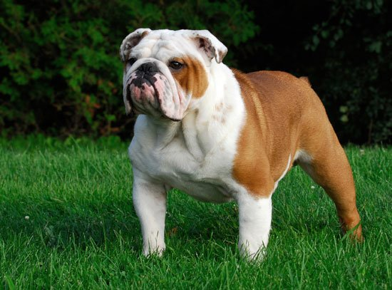

BULL DOG
Weight:
54 lbs.
50 lbs.
Height :
17 in.
16 in.
Length:
Short .
Color:
Fawn, White, Red, Brindle.
Longevity:
8 – 10 yrs.
Bull Dog personality
The English bulldog has a sweet, gentle disposition. Dependable and predictable, the bulldog is a wonderful family pet and loving to most children. People-oriented as a breed, they actively solicit human attention. However, they have retained the courage that was originally bred into them for bull baiting, so they make fine watchdogs. Although they generally get along well with other family pets, English bulldogs can be aggressive to unfamiliar dogs.
What to expect
English bulldogs make fine apartment pets and do not require a yard. Typically low-endurance dogs, they need only a moderate amount of exercise. They thrive best in temperate climates: they readily overheat and have breathing difficulties in hot weather, and they chill easily in cold temperatures.Generally loud breathers, English bulldogs tend to snore and wheeze. Many drool as well. They are moderate shedders and their short coats require little grooming. However, the wrinkles on the face should be wiped regularly to prevent skin infections.
History of the Bull Dog
Named for its use in the sport of bull baiting, the English bulldog seems to have originated in the British Isles sometime prior to the 13th century. One of the few references to the sport dates back to 1209, and talks about a butcher's dogs that chased a bull through the English town of Stamford. This pursuit so pleased the earl of the town that he inaugurated bull baiting as a sport in his domain.Today, the English bulldog makes a fine family pet. The AKC recognizes the breed simply as the bulldog.